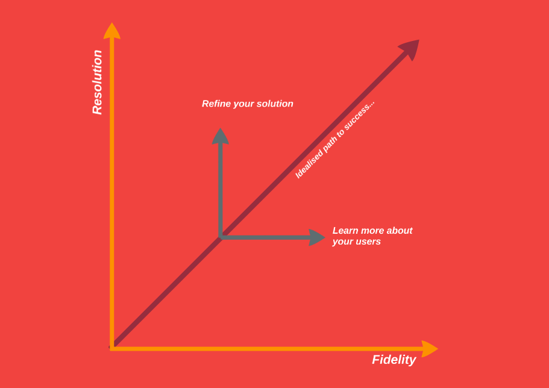

Creating a product is exciting! Some magic spark of insight sets you and your team off on a journey of discovery and engineering culminating in the release of your creation out into the wild. Everyone in your team is naturally pulled forwards, refining the product in the context of their specific discipline. But given you work with a variety of different experts, refinement probably means something very different to each one of them.
Digging in too deep in any specific direction is actually really detrimental to the success of your product. You run the risk of getting stuck learning and never deriving any value from the lessons, or else moving too fast and never taking the time to learn anything about your product. Managing the balance between the level of detail of these two directions is probably one of the most important things for you to do as a Product Manager.
I have been thinking about this topic a fair bit recently when I came across this great article by John Willshire that aligned well with recent discussions I had with the rest of my team. I will be adopting the language and model described by John over the rest of this post.
A product can evolve in two directions; fidelity and resolution. If a product exists to serve its users, then fidelity describes the level of detail to which you understand them. You increase this through discovery; talking to them, studying their needs and patterns, and testing your product against them as it evolves. On the other hand, resolution describes the detail of your solution and can evolve from a static napkin drawing to a well architected, fully coded product.

A good team travels the journey through increasing detail in fidelity and resolution together. A great team understands the need to balance between the two. It is however ultimately your job to maintain this balance. There are also no hard, generalised rules around this, you need to understand the specific context of your product, team and organisation and make the right choice.